16:12
Я третий раз пытаюсь начать писать описание того, что происходит. Сижу в поезде из Гамбурга в Гёттинген. Сегодня первый солнечный день здесь за эти две недели и сегодня
для меня начинается важный год в жизни. Я стартую в волонтерском проекте от Европейского Корпуса Солидарности (ESC). 6 недель назад мне удалось пройти собеседование и за это время сделать новую визу.
Чтобы я попал на проект велась работа нескольких организаций, которые мне очень сильно помогали в непростых ситуациях. О том, что это, как было и будет, я обязательно расскажу в ближайшее время, в ближайшие дни.
Могу сказать, что работа будет связана с детским дополнительным образованием, а также есть шанс неплохо выучить немецкий язык.
А для вас у меня уже есть первые важные тезисы:
- Я еду не в рабство
- Расходы на визу, билеты и прочее полностью (или частично) берет на себя принимающая организация (о ней позже)
- Цель волонтерства не работа, а получение новых скилов и знаний. В моём случае - работа с детьми и изучение немецкого.
- Всё это очень важно и надо.
17:00
Наши поезда с Аленой (кто это?!) встретились в Ганновере. Алена - это моя коллега. Нас вместе отобрали на проект в одно и тоже время. Мы о друг друге совсем не знали и не знаем,
но уже успели друг другу помочь морально при получении визы. Сейчас она на 5 минут меня опережает. Её поезд из Берлина и мы уже несемся друг за другом в сторону Гёттингена. Нас будет встречать корифей нашей будущей школы - Кора. Почему-то в общем чате отвечает
нам всегда по-немецки. Надеюсь, чтобы мы быстрее адаптировались, а не потому что она не знает английский, иначе мы с Аленой будем неловко повторять только одну фразу "Ich komme aus Russland!"
Пойду пока собирать вещи - иначе не успею выйти из поезда!
18:00
Но всё обошлось, Кора нас встретила с чудесными флагами Германии и России, и мы вместе направились в наш новый на год дом. С квартирой мы познакомимся с вами в следующий раз, пока расскажу про саму атмосферу в целом.
Как только мы подъехали к подъезду (парадной - прим. для читателей из Петербурга), нас встретили и помогли поднять сумки. Пока что соседей двое: Джон и Kačka. Нас встретили пиццей и распросами о нас, наших странах, путешествиях и историях.
Все, кроме нас с Аленой, уже имеют достаточно большой стаж, их волонтерские проекты близятся к завершению или на половине. Так что по лицам можно уже прочитать, что люди здесь получают положительные эмоции.
Скорее всего я не буду описывать, каждый день подробно, раз в три дня или в неделю буду писать о том, что происходит со мной здесь, буду очень рад, если вы будете это читать :) Завтра напишу о том, чем и как я буду заниматься, о быте, после этого обязательно расскажу про то, как получал визу и кто мне в этом и как помогал. Всем спасибо за насыщенный день!
10:00
Неужели опять вставать по утрам? Боже правый. Будильник убил сон про что-то приятное и хорошее. Первый раз что-то приятное и хорошее снилось в Германии. Так получилось, что предыдущие три месяца мозг будто бы перерабатывал
информацию, которую он откладывал на потом. И все это время пахал, словно пропустил все дедлайны. Но сегодня не так, сны мне нравились. Будильник решил, что хорошее надо дозировать. Ну, правильно. Сегодня первый рабочий день.
Знакомство с первыми детьми, да и вообще знакомство с тем, что я буду делать.
10:40
Я стою с велосипедом и Джоном перед выходом. Каждому волонтеру в моей теперь любимой организации CVJM полагается велосипед и фонарики. Джон не полагается, но мне повезло, поэтому мы уже мчим по улицам Гёттингена, сквозь толпу велосипедистов, которые не очень торопятся по своим делам. Везде велодорожки, и вообще мне кажется, что машины боятся тут велосипедистов.
Всего десять минут пути и мы паркуем наших коней. Джон уже третьим предложением рассказывает мне, что и где, как и почему, в дверях нас уже встречает Кора и Роланд. Кору вы уже знаете, она работает в CVJM в качестве "преподавателя", и вообще она ответственна за нас волонтеров, нашим расписанием, нашей занятостью и комфортом (в том числе заботится, чтобы нам в квартире жилось очень хорошо). Роланд - наш самый большой начальник. Он занимается всем, всем и даже больше.
Он был одним из тех, кто помогал мне с документами на подачу визы, Роланд меня собеседовал и вообще принимал по мне решение. Ведь именно отправляющая организация составляет с вами договор, и именно она вас должна отобрать на проект.
И вот он уже не в скайпе, встречает меня с улыбкой - настоящий стоит и говорит, что ему нужно убегать, работать, говорит, что встретимся с ним после обеда.
12:00
Инструктаж от Коры. Узнал, что в организации в Гёттингене ведется работа по нескольким направлением. Основные из них детские лагеря, детский садик и "группа продленки с деланьем домашки и всяких ништяков". Именно в последнюю из них я буду включен больше всего, но в других частях организации мы тоже будем очень часто.
Трудно описать, что такое CVJM. Об этой организации можно прочитать в Википедии. Если коротко, они по всему миру, в каждой стране свои цели, но в общем - это некое место, где дети из христианских (и не только) семей могут очень здорово, полезно и классно проводить время после школы. Ничего религиозного не зашито в программу, все сшито из крепких ниток любви к детям и к жизни.
Потихоньку я все пойму, вам расскажу и разложу по полочкам. Первая часть работы, с которой я познакомился - это работа с "группой продленки с деланьем домашки и всяких ништяков". Я сокращенно называю "ГПСДДИВН". Школьники начальной школы приходят после занятий, где-то в час - обедают, смотрят всякие крутые видео или читают вдохновляющие истории все вместе, делают домашку, а потом приступают к играм настольным, на улице, в театре, где только захотят. Все это при участии нас - волонтеров и Коры. (пока что было так!).
4 часа прямой контакт с детьми. Пока что я познакомился только с двумя юными немцами. Они сразу уверенно начали со мной говорить. На немецком. Барьера никакого (у них точно) со мной не возникло. Мой уровень языка А0 не дал выразить мои первые мысли, задать первые вопросы, но приклеенная бумажная елка со скотчем мне на голову, дала понять, что кажется всё идет хорошо. Я проиграл два раза в крестики-нолики, два раза пропустил гол в футболе во дворе, но я видел, что дети мне улыбались.
16:00
Мы проводили моих первых друзей домой. Один уехал в маске на самокате. Другой кажется бежал за ним. Потом была уборка, в течение дня я был на разговоре с Роландом насчет моих всяких дел, регистрации, велосипеда и прочего. Роланд всё помнит, знает и подсказывает. С ним мы точно не пропадем. После всех битв я и Джон поехали в магазин, я потратил первые 50 евро на еду и мобильную связь. Дома сварил суп, к нам приехала Кора привезла клевые лампы в комнату и что-то планировала по мебели. С ней был её молодой человек, кажется тут все вовлечены семьями и живут общим делом.
Рулеткой все померили, что-то обсудили (я просто слушал) на немецком. И что-то обсудили (я обсуждал) на английском.
У меня пока не получилось ничего вам написать, что обещал, но времени сегодня уже совсем не было. Простите.
Пять дней, а уже выходной. Дни пробегают под грифом "очень интересно, но ничего не понятно, давай ещё раз". Может у меня идет медовый месяц с этим местом, а потом как накроет?
За эти три дня, что я не писал, происходило все по старым сценариям. Утро - Джон - велосипед - подготовка к детям - дети - игры - футбол - грязный от футбола - мытье всего - домой - немецкий. А ещё ёлку носили - тащили и чистили одновременно улицы, снимали плакат с церкви.
Я познакомился с 5 детьми. Йоханна, Лео, Зеверин, Томас и Рете(? завтра уточню). Я хотел сначала стесняться и улыбаться. Я это делал пять минут, пока Зеверин за мной не погнался и мне нужно было уточнить, угрожает ли что-нибудь сейчас моей жизни. И мне так необходимо получать от детей информацию, что приходится бороться за каждую крупицу. Так я уже умею спрашивать (за грамматику не отвечаю!):
Kann ich dich fragen? (Могу я тебя спросить?)
Willst du Wasser? (Хочешь воды?)
Willst du mit mir spielen? (Хочешь поиграть со мной?)
Wie geht's dir? (Как у тебя дела?)
Ich will mit dir in UNO spielen! (Хочу с тобой играть в Уно!)
Was ist das? (Что это такое?)
Das ist meins. Das ist meine Haus! (Это мой! Это мой дом!)
Да, я мерзну. Приходится из пледа строить дом. Но Зеверину обычно это не нравится. Он больше любит ломать мой дом.
Was suchst du? (Что ты ищешь?)
Обычно отвечают Meine Karten. (Мои карты). Сейчас в Германии у детей популярна карточная игра. Коллеги обещают спад интереса к ней быстрее чем снятие локдауна в Германии.
Bis bald! Bis morgan! (До скорого! До завтра!)
Йоханна научила меня:
Der Einhorn! (Единорог) и считать до 60-ти.
Зеверин научил:
der Stern - die Sterne (Звезда - звезды)
Больше не буду раскрывать все карты! Но вы видите, надеюсь, что все необходимые зоны я стараюсь покрывать. К новостям из мира коронавируса: Алёна завтра выходит из карантина и мы начнем с ней штудировать немецкий язык и магазин. Так же в наш замок приехала Есси, из заснеженной на данный момент Испании, со второго раза ей получилось взлететь и вернуться с Новогодних каникул, мы познакомились, обменялись мнением о графике дежурств и теперь нас пятеро не считая Кваки (немецкий друг-лягушка).
Внимание. Блог о спорте. Одной из целей на проекте я обозозначил бег, возвращение к догерманским временам. Последнее время организм дает точечные сбои, связанные с моим питанием и режимом дня (да, поэтому я пишу это в час ночи!). Так вот! Я начал дело! Теперь у меня есть календарь бега! И я теперь бегаю! Можете подписываться на меня в Страве, напишите - кину ссылку! Первые 7 километров были пробеганы в Германии! Может получится наверстать! Раньше-то как бегал! Ух! Кстати, на маршруте Страва отметила, что на каком-то участке я пробежал третьим на районе! Это вам не хухры-мухры. Скоро кое-кто узнает нового Героя!
Выходные будут насыщенными. Немецкие языки, курсы для школьников, занятия с учениками. А ещё тут небольшие горы вокруг, поэтому может даже туда сходим с Аленой, Джоном, Каткой и всеми всеми в субботу. Я почти не видел город за это время. Говорят, что он очень красивый.
P.S. Ходил ко врачу в Питере. Перед уездом. Страховка это все оплатила и даже лекарства. Я в умиротворении.
На этой неделе мы собрались все! Нас теперь 4 волонтера - все вышли с карантина. Детей, к сожалению или к счастью, не прибавилось. Стали появляться новые фишки. Дети придумали играть с нами в школу. Теперь мы сидим за партой и учим немецкие слова.
Первым уроком были животные, зайцы (der Hase) кошки (die Katze), собаки (der Hund) черепахи (die Schildkröte), птиц (der Vogel), хомяков (der Hamster) и попугай ( der Papagei).
Конечно, без контрольной работы не обошлось. Все кончилось детской карточной игрой, в которой нужно было называть животное и уверенно говорить, что оно не накакало на ковёр.
«Meine Katze hatte nicht auf den Teppich gekackt. Es war (имя следующего животного)»
Онлайн - курсы чертовски сложные и неподъемные. Я перед этим провёл несколько месяцев уча частички языка и уже что-то знал. Но за одно занятие на сайте от Эрасмуса я записал 30 новых слов, которые в течение занятия повторялись для закрепления лишь раз. Глаголы стояли без объяснения уже в разных временах и спрягались, как только могли.
Существительные смотрели на меня в разных, ещё неизвестных падежах. Артикли вместе с существительными скакали и менялись. Если бы я первый раз увидел немецкий язык в таком виде - мне пришлось бы разбираться только с первым уроком недели две. Может я делал что-то не так. Но онлайн курс я забросил.
Интенсивный курс я очень жду. Он будет с преподавателем и его очень хвалят. Если накоплю денег, то возьму ещё один. Пока что мы штудируем учебник с Аленой и делаем это вполне успешно. Мне очень нравятся наши результаты. Идём вперёд.
Немецкие детские игры - Слава: 1:0.
О команде
Мы сработались. Это очень чувствуется и это очень здорово. Наш медовый месяц продолжается. Играем в настольные игры, катаемся, гуляем по Геттингену, едим еду.
Немцы, чехи, испанцы и перуанцы нормально приняли мой борщ, и хорошо восприняли шарлотку. Мы с Аленой периодически боремся с немецким - но на этой неделе совсем не позволяли силы.
О языке
В проекте для нас предусмотрены курсы немецкого языка. Часы изучения включены в рабочую неделю.
Для нас доступны он-лайн курсы от ESC (Europe Solidarity Corpus) и наш центр оплатил нам один стартовый интенсив курс.
Транспорт
На этой неделе я получил рабочий транспорт - велосипед. Вообще, в контракте официально было прописано, что я имею право на проездной в общественном транспорте. Но мы изначально обговорили, что мы заменим его на велосипед и его обслуживание. Я был совершенно не против, потому что:
1. Велосипед - это клево.
2. В Геттингене очень развито велосипедное движение. Здесь скоростные велодорожки, везде есть парковки, очень удобная навигация и уважение от участников всех участников движения.
3. Велосипед фиолетовый и очень красивый.

Русский магазин
В выходные были в русском магазине. Русскоговорящих здесь, кстати, достаточно большой процент. Традиционная атмосфера продуктового магазина с творожными сырками, кефиром, солеными огурцами, пельменями и прочими радостями жизни. Все работники - русскоговорящие, поэтому не редко, когда очередь в кассе из-за того, что люди просто не могут отказать в удовольствии поговорить на родном языке.
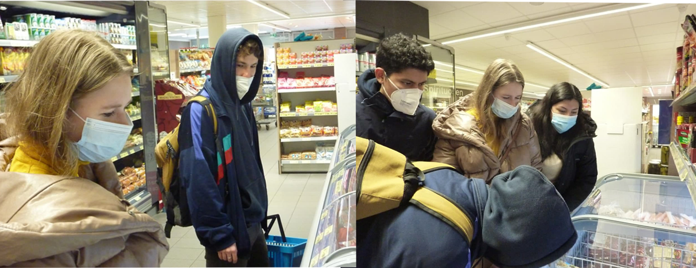
С начала сентября я получил две визы в Германию. Больше и до этого ничего и ни от кого не получал. Решение о переезде в Германию я принял в середине сентября. Тогда я оформил частную (тип С, по особому личному случаю), дали визу очень быстро, в течение двух дней. Хотя документы я собирал очень долго и дорого.
На момент утверждения меня на проект я находился уже два месяца в Германии, все собеседования проходил в Гамбурге. Поэтому, после положительного по мне решения, встал вопрос о смене личной визы на волонтерскую (тип D).
На тот момент я уже знал, что внутри Германии можно менять и продлевать визы только одинакового вида. Если у вас Д, то менять можно только Д. В остальных случаях нужно возвращаться на Родину, переоформляться там. Но надежда и вера в успех никогда не уходила от меня. Я написал два слезных письма, где описал тяжкую ситуацию с вирусом и с тем, что очень дорогие билеты на самолет, что ещё есть всякие и не всякие причины. Но ответ был немецким, строгим. Нужно ехать в Россию, менять визу там. И вот я уже через три дня сидел в замечательном, мягком, великолепном, удобном автобусе. Всего 40 часов сквозь всю Европу и пешую границу России, и я уже был в Петербурге, где в итоге провел в карантине и визовых делах весь декабрь.
Документов было не так много. Мне нужно было только распечатать копии паспортов, перевести документы на немецкий и сделать миллиард копий, получить страховку (об этом ниже). Дольше всего я делал, конечно, предпоследнее. В самом посольстве сейчас происходит все по онлайн-записи, все должны приходить строго на 15 минут, в строго отведенное время. Никаких лишних вопросов и разговоров. Маски, каски, перчатки и добрые глазки.
После приема документов я терпеливо ждал, когда мне напишут результат, позвонят или сделают что-то ещё. Но в итоге позвонил сам и оказалось, что консулу не понравился мой трехсторонний договор. Пришлось в срочном порядке его переделывать (спасибо Роланду, который в очередной раз меня спас!) и нести в этот же день. Принес в 12:05, но к сожалению, посольство уже не работало. Принес новый контракт я только на следующий день.
Мне позвонили через три часа и сказали, что этот договор уже лучше. И что они меня ждут на личное собеседование через неделю за 5 дней до начала Рождественских каникул. (кто знает, почему это плохо, поймут мои чувства).
На собеседовании меня спросили, какие у меня цели (новый опыт работы с детьми, изучение языка), почему я просто не найду там работу (потому что нет немецкого языка, а волонтерский проект мне этот скилл даст), собираюсь ли я остаться после проекта в Германии (сказал, что на данный момент, я этого не планирую). Кажется, это стандартные вопросы, возможно они были с подвохом - я не знаю. Эта национальная виза у меня первая, но кажется, с этим квестом я справился тогда хорошо.
И уже через 2 дня я уже сидел в обратном 38 часовом Эколаинсе до Берлина.
Алене, кстати, дали визу очень быстро, буквально за два дня. Даже договор не просили менять, хотя он был точно такой же. И без собеседования. У каждого своя история, и стоит учесть, что Алена подавалась на визу в Москве. У каждого посольства свои требования.
Кроме любимого Роланда из CVJM в Гёттингене, мне очень помогала, оформила мою страховку и поддерживала во всем команда Сферы. Сфера (Нижний Новгород) является моей sending organisation. Это организация, которая помогает тебе отправиться на проект из твоей родной страны. Они, кстати, очень крутые - если вы будете одобрены на проект от Европейского Корпуса Солидарности - смело обращайтесь к Сфере (https://www.instagram.com/sfera_russia). Они вам смогут помочь. Они лучшие. Заходите в инстаграм, читайте о них, про них, о другом, обязательно посетите сайт, если вы бы хотели принять участие в волонтерских проектах. У Сферы очень много полезной информации.
🤐 Бывает так, что я забиваю и не пишу. За эти четыре недели я пытаюсь сесть написать уже большое количество раз. Но текст не идет. Происходит много, а рассказать что-то интересное - ничего не идет в печать из головы.
Работаем хорошо.
За эти недели мы пережили эвакуацию в Гамбург из-за найденных в Геттингене бомбах со времен второй мировой войны, свой день рождения, карнавал в Германии, нас завалило снегом, регистрацию в Ратуше, несколько путешествий на велосипеде и походы в супермаркет. Расскажу обо всем по-порядку.
Так случилось, что мы оказались в окружении 4 бомб. Весь район, включая 8 тысяч жителей, был вынужден разъехаться по городу и стране, чтобы все было безопасно дезактивировано и взорвано.
Официально для нас было выдано разрешение на обход коронавирусных ограничений. Нам позволили и мы не стали терять возможности уехать на 4 дня восвояси. Так как в Гамбурге живет наш лучший и любимый немец Йоханнес, мы с Аленой купили билеты именно туда.
В Германии очень дорогие железные дороги. Даже не по меркам рубля, а в принципе, очень дорогие. Если это скоростной поезд, билет обойдется вам за 300 км пути где-то 40 евро (3600 рублей), если он куплен в день отправления и у вас нет дисконтной карты.
Так как я покупал заранее билет и карта у меня была - билет стоил 21 евро. Алена заплатила вроде 49 евро за тот же поезд и тот же билет.
Есть и другой путь. Это дневной билет на региональный поезда. У нашей земли (Нижняя Саксония), а так же соседней земли (Шлейзвиг-Гольштайн), есть свой проездной билет для повышения туристооборота. Выгоден он группе людей от двух человек. Покупаешь билет за 23 евро за первого человека из группы и по пять евро за каждого следующего (максимум 5 человек), и у вас на руках будет дневной билет на все региональные (то есть нескорые, обычные электрички) поезда твоей земли + до соседнего Гамбурга + городской транспорт в городах отбытия и назначения. Надеюсь, вы поняли :) Выходит дешевле в два или в три раза, только ехать в три или четыре раза дольше. Мы воспользовались этим билетом по дороге домой. Ехали 3 часа 50 минут вместо 1 часа и 40 минут.
В Гамбурге мы провели чудесные 4 дня, в которых Гамбург предстал пред нами в солнечном свете, чего я никогда не видел за прошлые осенние три месяца. Мы покатались на пароме, посетили центр города, делали вареники, пили шнапс, искали оленей в лесу. Там же встретили и первый снег в этом году в Германии. Этот день начался с прекрасных поздравлений в квартире, везде было на разных языках написано, что День рождения - это не повод умирать. Что я ещё живой и буду жить. Вечером мы праздновали до самой поздней ночи с танцами и с песнями. Ребята испекли прекрасный торт. Все прошло очень душевно и радостно, давно я не радовался этому дню. Но сильно описывать радость не буду, так как я не умею это делать. Мне теперь 25 год.
Ого! Хэллуином ничего не ограничивается. В немецких школах настоящий карнавал! Дети с большим удовольствием ждут этот праздник, когда можно прийти в школу в своем крутом костюме Дракулы или пожарника, а можно и побыть волшебником какое-то время. У нас же в CVJM была настоящая карнавальная штуковина с пиццей, играми и даже барной зоной, где можно было выбрать и сделать самому "Мохито от Алёны" или Кефирно-землянично-банановый коктейль от Славы". Русские как всегда зажигали у барной стойки.
Я же к этим двум дням сделал свой первый в жизни костюм динозавра, надеюсь он вам нравится. Я люблю карнавал.
Как это странно не звучит, но зимой беда пришла откуда не ждали. На Геттинген налетел мощный снегопад, весь город погрузился в недельное оцепенение. Температура лишь один раз опускалась до -20, но в общем, было не очень холодно.
К сожалению, только даже наличие снега привело к тому, что несколько дней не ходили никакие поезда, в магазинах не было достаточно продуктов, в школах отменили занятия, дороги превратились в непроходимую снежную массу.
Чистили только что-то самое необходимое, в СVJM мы тоже чистили сами, но город застрял в снегу.
На данный момент снега уже нет и в городе температура +20 градусов. Все вернулось и как будто ничего не происходило. Лишь остатки снежной горки, которую я пытался построить для детского сада немного напоминает о бурях и зиме. Сейчас на этом месте уже всходят подснежники.
У меня на этот день была назначена встреча в ратуше для получения регистрации по месту проживания. В связи с короной, все записи были онлайн и они всегда расписаны на месяц вперед, поэтому я ждал эту встречу ещё с начала января.
На почте лежало письмо со всей необходимой информацией, конечно же на немецком языке, которое я решил открыть 17 февраля, чтобы проверить адрес и время проведения встречи. Адреса в письме не оказалось, но была ссылка, которую гугл-переводчик перевел: "нажмите, для продолжения".
Ну, я и нажал. Ну и за одно вместе с этим отменил эту встречу. Если что всё это происходит уже в 1 час ночи 18 числа.
Сошло 17 потов, никакой контактной информации естественно нет, откатить ничего нельзя, следующая доступная встреча только в конце апреля. Недолго думая, я пошел спать, встал в 6 утра и поехал в ратушу "наводить суету".
После 20 минут разговоров о том, что я дурак и придется ждать, у человека на рецепшене нашлось окно в 12-00 18 февраля, то есть в этот же момент. В итоге, все закончилось благополучно.
Но! Что если бы нет. Если бы нет, то в итоге я бы просрочился по всем законам, был бы в лучшем случае штраф, а в худшем депортация. И без регистрации в банке мне не дают зарплатную карточку. Но все кончилось, кажется, хорошо.
Мораль. Гугл-переводчикам не верю больше. На ссылки не нажимаю.
А теперь самое красивое. Мои веловылазки.
Выходные - это святое, которые я трачу на вылазки по ближайшим горам и долам. Держите красивые виды из округи Гёттингена!
☄️☄️29 января - 2 марта. Эвакуация в Гамбург☄️☄️.
🚞Что касается билетов.🚞
11.02. Мой День Рождения.
🐲15-16 февраля. Карнавал в Германии. 🐲.
🥶Нас завалило снегом, но уже весна. 🥳
🧑💻19 февраля🧑✈️
Мозг решил отторгать любое немецкое слово, после того, как узнал, что приставка от глагола может отделяться и уходить в конец предложения. Решил даже про это завести тик-ток, но после нескольких попыток решил оставить этот шок внутри себя перевариваться.
В Германии я уже около пяти месяцев и кажется, что все стадии депрессий и упадков давно уже отдепрессированы и упаданы. Но за эти две недели пару раз бросало по этим волнам. Помню, как в сентябре, ещё до проекта мне не давали спать дурацкие сны. Они, как капуста отслаивались. Сначала снилась школа, в которой я работал, потом Москва, институт. В ноябре я уже дошел до Урала и детства. Но, потом я нашел этот проект и в голове, как будто всё стало на места, стал спать, а по утрам даже не зевал.
Сейчас снов нет. Ну, может во вторник приснился атомный взрыв. Но я прочитал в соннике, что это к хорошим новостям. Однако в голове опять танцует тревожность. Всегда любил держать все под контролем, идти по какому-то прежде построенному плану. И на этот год он уже кажется есть. Но дело в том, что прошло от проекта целых два месяца. Осталось десять, а план на следующий даже не начинается формироваться. Мне бы лично забить на это и не думать. Ведь целых десять месяцев. Но мозг не обмануть - он уже неделю бьет вместе с окружными церквями в колокола. Только если одни звонят по утрам и в полдень, моя голова гудит круглый день. Пришлось подать документы в университет на магистратуру в Гамбурге. Может оно и выйдет.
Для подачи документов опять потребовался миллион и две десятых документов, переведенных на все известные языки мира (+ клингонский). Пришлось искать переводчика в нашем маленьком чудесном Гёттингене. Через маму одного из наших детей удалось найти. За что ей спасибо большое. Теперь остается ждать, когда подтвердят местные власти мой великий диплом инженера, авось и получится.
Вообще, если запланируете поступать в иностранный университет уже сейчас займитесь документами. Как минимум поставьте, если еще нет, апостиль на ваш диплом, а потом, если есть время и деньги, подтвердите свой диплом в той стране, где собираетесь учиться или работать. Процесс этот не очень быстрый и требует денег и терпения.
Что с проектом?
Мы успешно прошли ещё через две недели детский бед и радостей. Как хорошо, что радостей много. Вышло солнце - мы теперь уличная банда пиратов, футбольный клуб, сыщики, садоводы и деревьелазатели. Детей теперь можно о многом спрашивать. Наша с Аленой база слов и конструкций постепенно увеличивается. Остается одна только проблема открытой - детский ответ по-прежнему трудно перевести. Практически невозможно. Но! Поспорить о лучшем вкусе мороженного или торта уже гораздо легче.
Карантин всё ещё атакует Германию. Очень много проектов закрыто, но в силу наших сил удалось провести раздельный слет одного из проектов (целей,которого я ещё пока не знаю). В ходе которого ребята приносили свои Happy stones (это камешки с нарисованными пожеланиями), теперь у нас целая аллея красивых камушков. Плюс им предлагалось найти клад в песочнице в саду. Целые выходные они приходили и приносили свои дары и забирали наши. Естественно каждый ребенок отдельно, никто не пересекался - все по правилам карантина.
Плюс, удалось попасть на встречу в Зуме проекта Heaven. Это для активных подростков, где они могут обсудить насущные вопросы, поднять интересующие их темы о религии, поиграть в настолки, в футболы, джаст дэнс и прочие прелести жизни. В живую это всё ещё лучше, но в зуме тоже было очень интересно и совсем не скучно. Единственное, всё на немецком, и если бы не наш приехавший немец Йоханнес из Гамбурга - совсем бы не получилось бы понять и простить. Но отвечал я на переведенные вопросы сам со своим всамомделишным немецким.
Все прошло даже очень насыщенно. О двух неделях совсем не переживаю - прожиты они не зря.
О жизни.
Я теперь с регистрацией и банковским счетом, скоро у меня будет зарплата! Нет, не думайте, если вы думали об этом же, зарплату я мог получать и без карты, но у меня в этом не было необходимости, так как у меня ещё пока есть ученики по математике. Их совсем два, но на нужды при нашей загрузке - хватает. Что я имею ввиду? Ну, просто тратить некогда. Три раза в неделю репетитор и продукты. Вот и все расходы.
О нас.
От нас уехала Катка. Её проект закончился. И теперь нас четверо. 28 марта у Алёны был День Рождения. Она теперь взрослая и мы по-взрослому 27 марта прошли 14 километров к закрытому из-за короны замку. А 28 марта с самосделанными бургерами и бадминтоном, у которого одна ракетка потерялась, поэтому использовали детскую песочную лопатку, так вот, мы пошли с этим набором на местное озеро, где успешно провели теплый уютный день. Алене подарили ключи от квартиры, которые до сих пор ей не доставались, и цветок для поддержания жизни в нашей квартире.
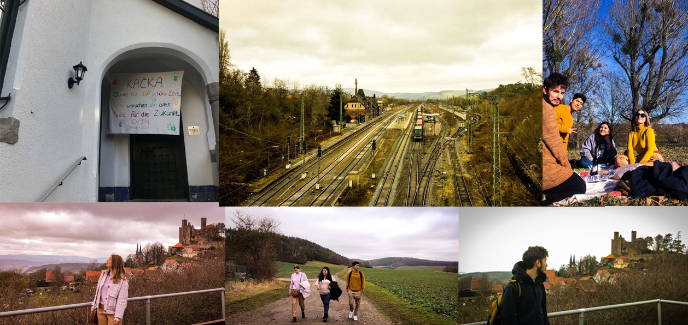Кстати, о моих путешествиях я вам тоже очень хочу рассказать. Вчера допустим проехали с Йоханнесом 60 километров по нашим долинам, просто по супер-крутым местам с чаем и булками. Я очень рад, что печенья и красоты было в одинаковых пропорциях. Фотографии снизу.
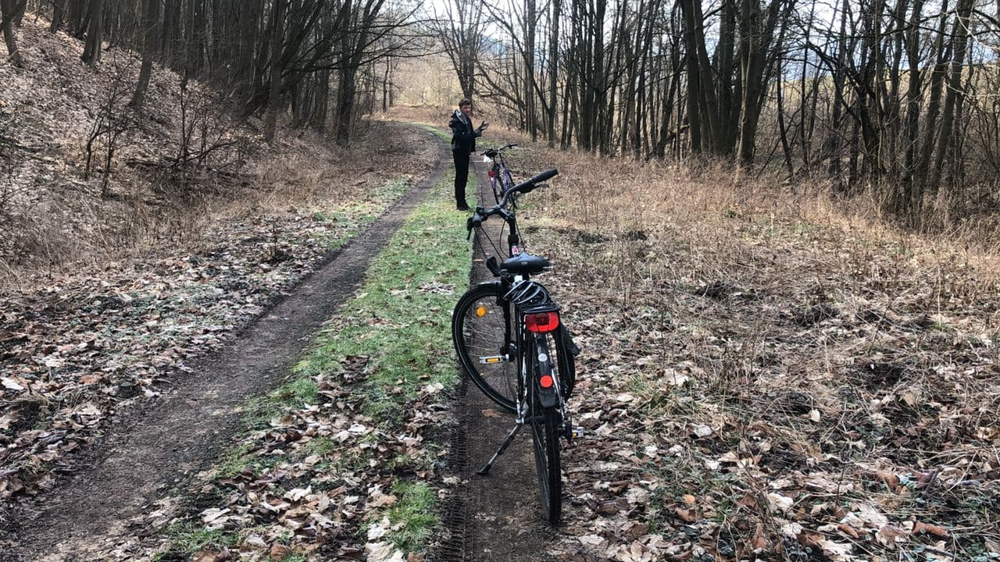 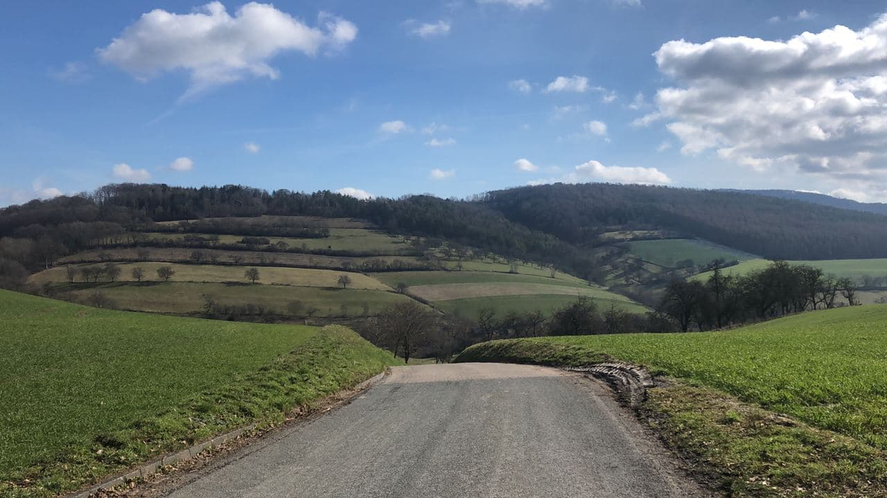 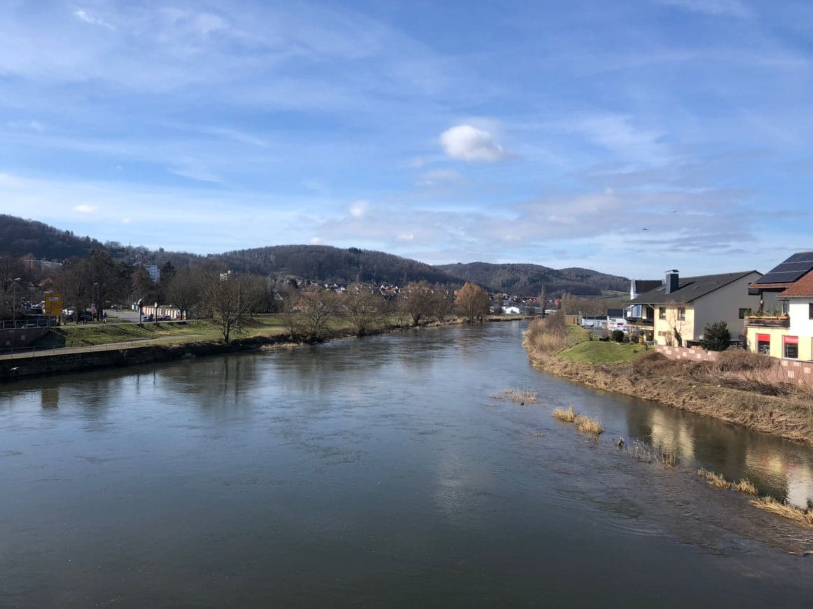 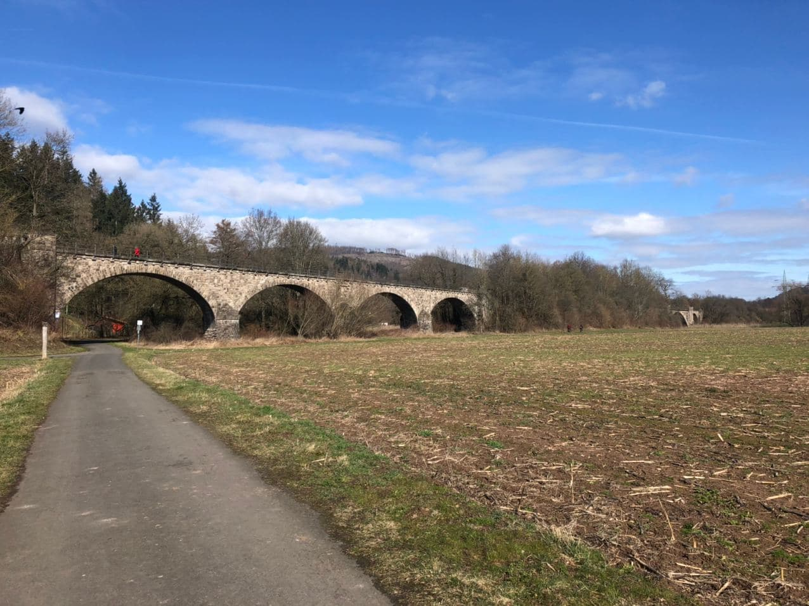 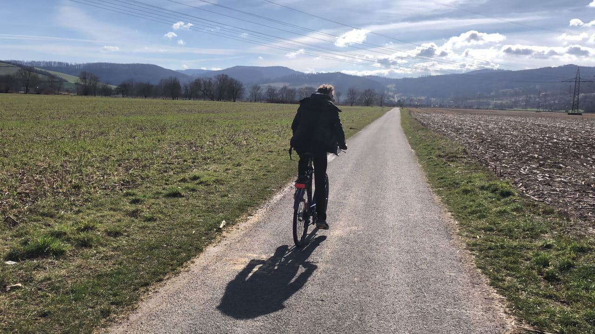 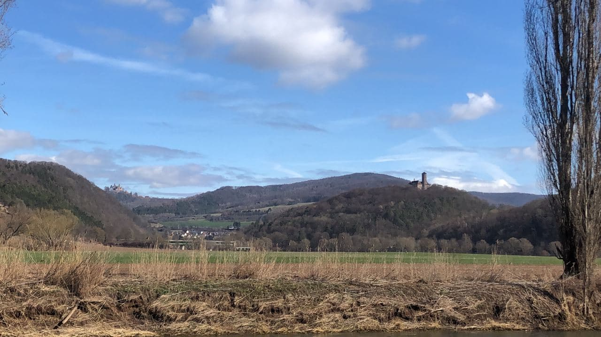 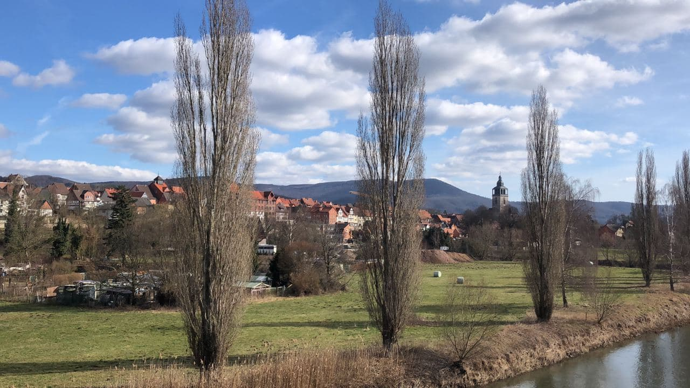 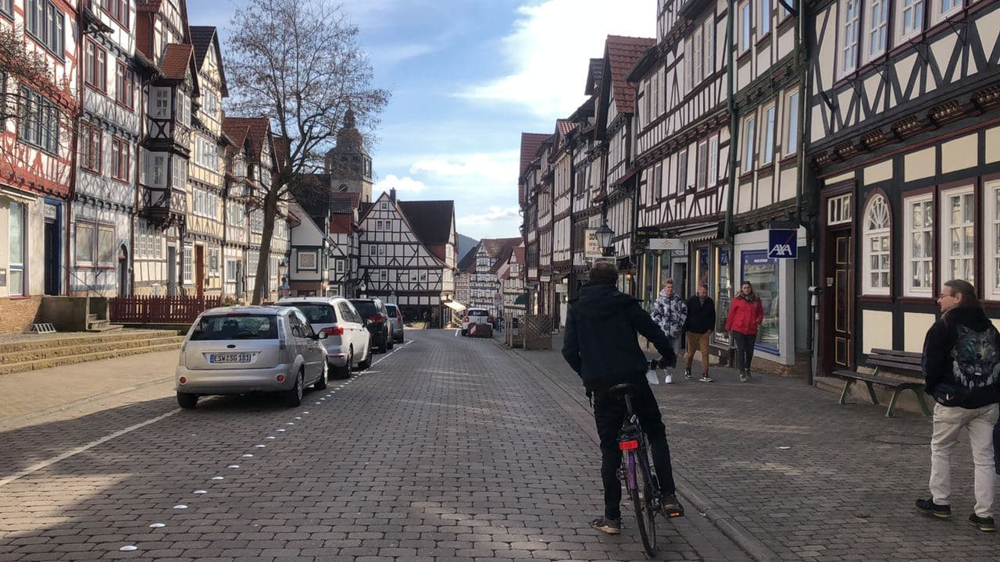 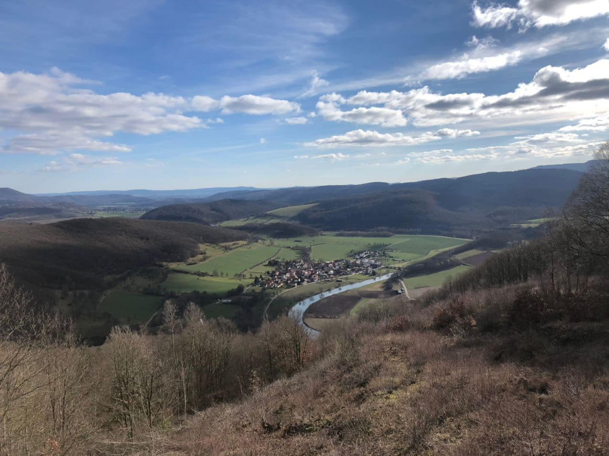 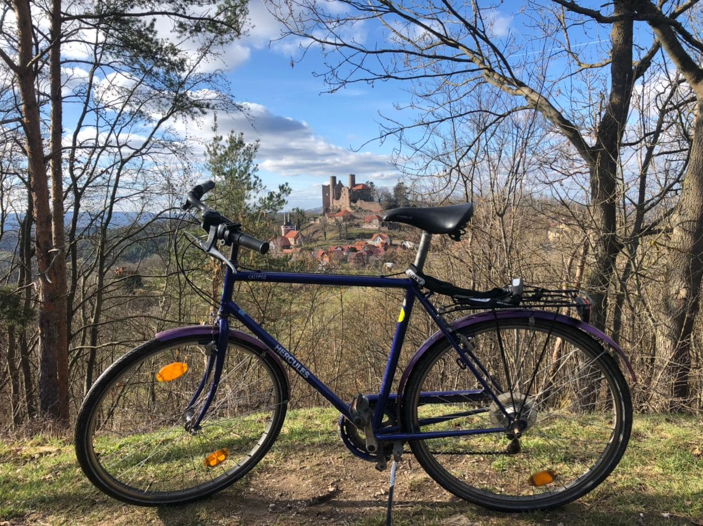